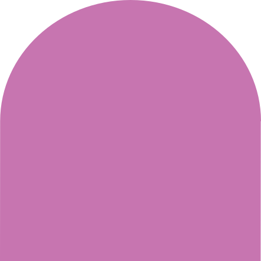

Chronnect es un proyecto concebido por un alguien que vive con EII, sumado a la experiencia, educación y conocimiento sobre el tema. El proyecto se aborda de manera integral con un enfoque médico, psicológico, emocional y social.
Esta plataforma impulsa el bienestar mediante el acompañamiento y apoyo para quienes viven con condiciones crónicas y quienes los rodean.
Esta plataforma impulsa el bienestar mediante el acompañamiento y apoyo para quienes viven con condiciones crónicas y quienes los rodean.
Por medio de la plataforma brinda información de valor que empodera y acompaña a quienes atraviesan este proceso a redefinir el rol que juega el diagnóstico en su vida, dándole un sentido orientado a una vida plena de bienestar.
Chronnect te escucha. Te guía para entender y escuchar tu cuerpo. Escucharlo –atentamente– es una invitación a cuidarte mediante la exploración de tu persona. Te da herramientas para darle sentido a lo que sientes. Escuchar esa voz de tu cuerpo, es darle un propósito.
No estás sol@. Conéctate. Chronnect crea una red que te acompaña y sostiene. Te ayuda a reconocer tu condición en y con otros. Cada voz distinta, cada padecimiento aislado, construye una red de empatía al compartirse. Las experiencias comunes nos dan fuerza, trascendencia, sentido.
Chronnect te da voz para responder. Para definir tu persona. Para integrar tu cuerpo y tu mente en equilibrio. Así, dejará de ser un grito aislado. Se convertirá en lenguaje. Te pronunciará. Te conjugará. Se volverá voz compartida. Diálogo. Equilibrio.
¿Te sientes perdid@ entre tanta información? En Chronnect encontrarás información clara y precisa. Esperamos aclarar tus dudas. Construye con nosotros un espacio de certeza y confianza.
¿No sabes qué hacer con tu malestar? Chronnect lo escucha, lo abraza y comprende. Te apoya y te ofrece recursos para tu proceso de descubrimiento. El bienestar es un proceso de sentido a la experiencia. Seas paciente o familiar de un paciente, Chronnect te acompaña.
Chronnect conecta voz y escucha. Chronnect conecta con tu sentir. Chronnect conecta con tus pensamientos. Chronnect te conecta con otros. Chronnect conecta contigo. Chronnect, al conectarte, construye sentido.